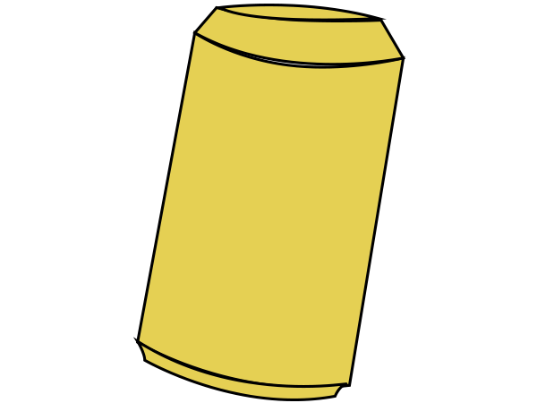
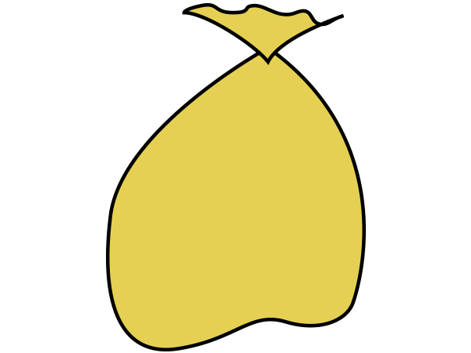

hoe te gebruiken
je bent klaar met je blikje of plastic flesje
gooi deze dan niet in de normale prullebak!
mensen die opzoek zijn naar statiegeld zullen de vuilniszak overhoop halen
mensen die opzoek zijn naar statiegeld zullen de vuilniszak overhoop halen